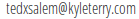

Thank you for watching my TEDxSalem talk. I'm glad I got the opportunity to share my exploration into darknets with you.
Below is the link to my previous talk with Danne Stayskal on the history of the internet as promised. Feedback is welcome! Just shoot me an email: 